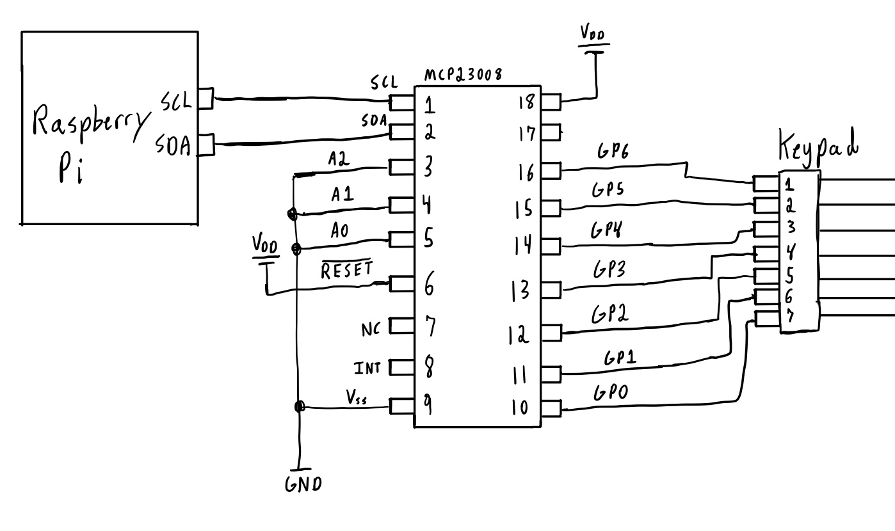
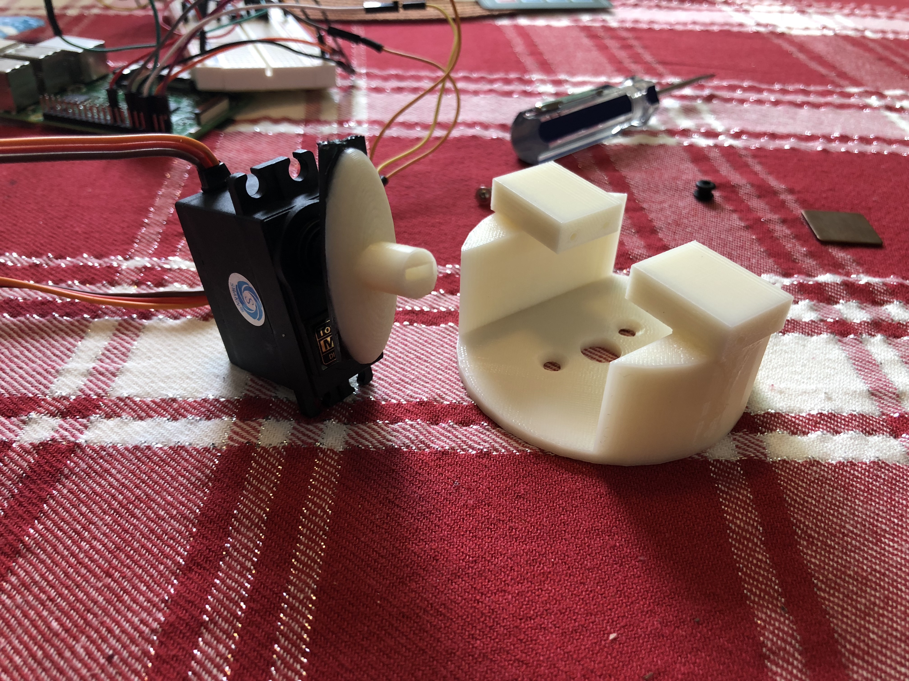
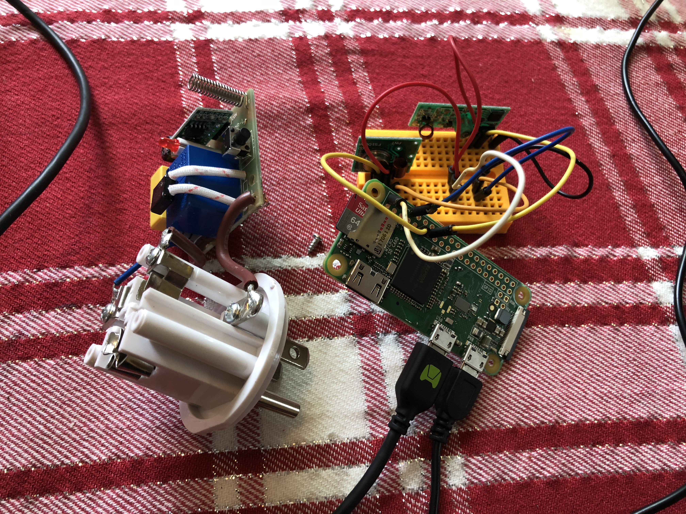
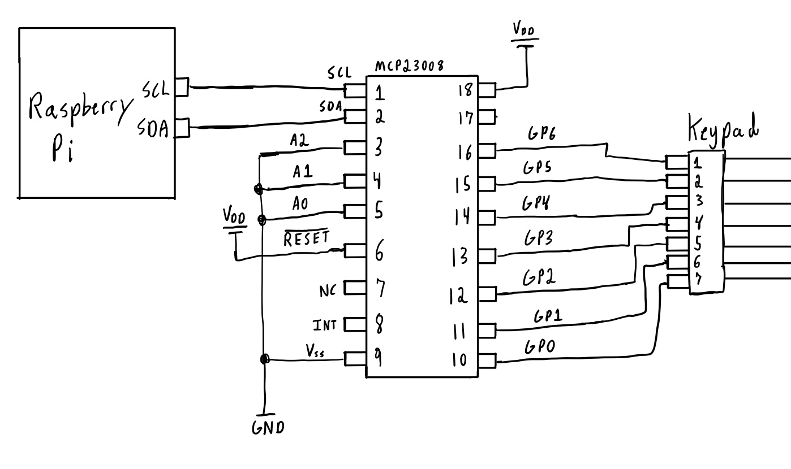
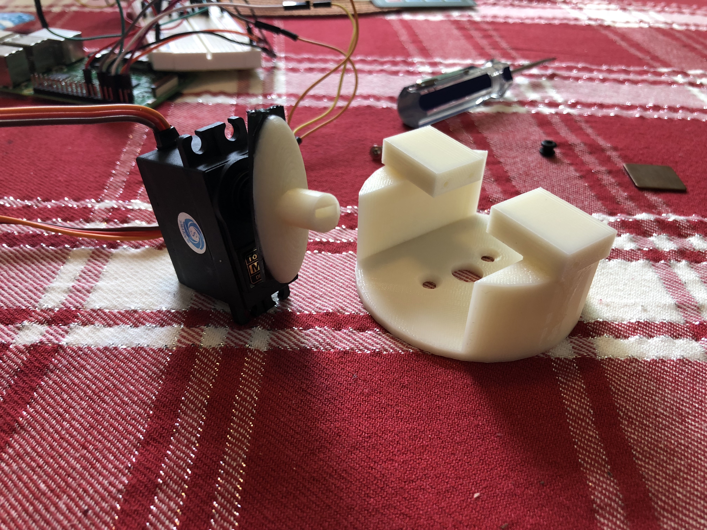
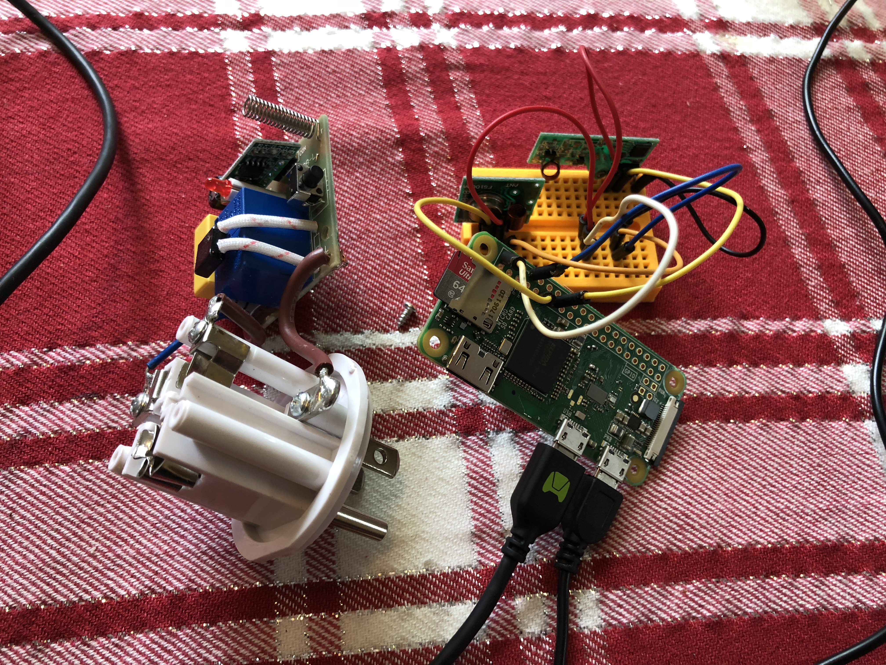

Home Automation
Summary:
A vast majority of homes are now acquainted with IoT devices due to the advancement in not only software but hardware as well. Intercommunication and designated protocols serve as key components to all of these devices which is where I wanted to start as a foundation.
At the heart of the project, lies a robust virtual server that uses Transmission Control Protocol (TCP) to allow communication between both the server and connected devices (clients). These devices are made up of matrix keypads that utilize I2C, locks created from 3D-printed parts and high-torque servo motors, LEDs that are connected using a wireless Rf transmitter and receiver module, and a Django based web interface/database to allow easy access for control over the devices but also for incorporating new devices into the scheme.
The end result was a home-automation system that allowed me to have a designated lock attached to a particular door, a keypad controller which allowed a user to input a code and if correct, unlock the corresponding lock it was connected to, LED lights that were able to be controlled through an online interface, and an easy setup GUI to allow more devices to be seamlessly connected. All of these connections are not only able to be controlled on the same network but also anywhere in the world where a viable internet connection is apparent.
I began my process like I would any new endeavor by diving right into the research. I wanted to understand how some products on the market today were connected and remembered Apple had a very unique ecosystem for their embedded devices. After reading up about their “zero-configuration networking” called Bonjour, I was interested to see if this would be a good form of communication for the devices I wanted to include in my system. I began to realize how Bonjour really worked and it actually seems pretty simple from a top view perspective. Any product running this form of protocol has the user setup the device onto the designated network and then the device actually sends out constant messages to the network saying it’s available to be connected. As I dove more into how this all worked, I stumbled upon network programming. This involved using sockets to setup a connection between a server and a client. For the case of Bonjour, Apple uses User Datagram Protocol (UDP) to allow most devices to be connected.
In socket programming I began to realize there are two standards of communication, which are TCP and UDP. After diving into the difference between each protocol I decided that I would be going with TCP over UDP for a few reasons. At a glance most people seem to use UDP when large amounts of data need to be sent. This could include constant messages from devices (Bonjour) or even streaming video. UDP is mostly used in this case because during the process of sending data, “packets” which contain the actual bytes of data can be lost in transaction. This is ok when your streaming a service such as a video game because packets are being constantly sent, so any that are lost are just overwritten by new ones being sent. TCP is what I chose because it allows for a closely kept environment in which very little to no data is lost, however this comes at the price of transmitting and receiving data to be slower. This is mostly due to each connection being accepted and then monitored closely for each device.
As I began to absorb more of an understanding of network programming I began to understand there are really two main elements I need. These include a server and a client. The server is the heart of the entire operation. It allows all the devices to be connected and to communicate with each other with or without having to be on the same network. It also keeps track of who is connected at a given time and who has disconnected. The clients are all the devices and interfaces that make up the actual input and outputs that a user can interact with. An example of this is commonly shown with a web browser because the browser itself is a client while the address you are trying to access is the server.
I began to build out the server and grasp fundamental concepts such as what is needed to make a basic socket connection. I’ve always been a fan of Python’s simple to approach atmosphere which is why I had my initial server programmed in it:
I was able to take away a lot that was involved in creating just a simple server side socket. This started with creating a socket that was setup with a certain file descriptor, accepting connections through IPv4, and using TCP. Then I got into actually binding my created socket to my local IP address and the particular port in which I wanted it to be listening on. After binding the socket, I went right into listening for any connections to see if I can read data from a dummy client I created. On the client, I created something similar to the server but after the client socket was created, I connected it to the server’s IP address instead of binding it. The difference between binding and connecting can be shown here:
After making sure I was able to send and receive data on both ends, I began to build out a simple command line interface (CLI) to allow me to see which devices would be connected with my server at a given period of time and their related IP address.
At this point I had my server running on a raspberry pi and was running my dummy client from my computer. I began to realize that the client should always be bound to a static IP address. If the raspberry pi ever reboots and changes its IP address then all the devices won’t be able to see the connection. That is why I decided to have my code run on digital ocean, running a simple Ubuntu server so the IP address can remain at a static state.
Using Python at first was a fine starting point but I really wanted to make sure I understood some of the core fundamentals which is why I turned to using C++. I made this switch because I know I was using CPython to compile my python code into bytecode and didn’t want the limitation of its global interpreter (GIL). This limitation could cause later issues mostly because the memory management is not “thread-safe”, not allowing multiple threads to compile the bytecodes at once. Down the line if I would be using a particular type of embedded hardware I would be able to utilize the CPU’s resources with my future C++ server. The other reason I have chosen C++ is because I believe I can obtain a better understanding based off of having to do a lot of the setup and teardown myself.
After recreating my server based on a new C++ platform, I began to build out my socket server to be more dynamic and allow it to manage multiple clients connected while also being able to constantly accept new connections. This is where my research shifted to the topic of multithreading.
Multithreading would allow me to have multiple processes running in the background of my server to allow for not only checking if a new connection is made, but to perform actions with already connected devices. After starting to implement features of a multithreaded program, I ran into a number of problems mostly with topics relating to blocking and unblocking states.
When a process runs in a program it is using a thread to perform the actions given by the programmer, but since I needed multiple actions I had to call for multiple threads to be running hense the name “Multithreading”. When I would run a certain process even with a new thread created for it, the computer still seemed to only be waiting for that process to finish before going to the next. A great example was when checking if any clients were sending data at a certain point in time. When this check would happen the entire program would essentially stop and wait even if there was no data to receive. This is essentially blocking in network programming. It blocks all the other processes in the program while it waits for its process to terminate. The good part is that in socket programming there are multiple flags and functions that use the concept of blocking and nonblocking to allow a user to customize each process.
After refactoring a lot of my code, I began to think about what devices I would want to have in my system. I really wanted to gain a better understanding of using a synchronous form of communication such as I2C which is why I decided to go with a matrix keypad from adafruit.
The keypad could be hooked up to GPIO pins but for my purpose I wanted to use I2C, which involved me using the MCP23008 chip to allow I2C communication between the chip and a raspberry pi pi I was testing on. The keypad would then be connected to the MCP chip through GPIO pins. The best part about this setup is that their left plenty of room for other devices to use the same pi because the MCP almost acts like an extension to utilize more GPIO pins.
Using a combination of higher level programming, data sheet schematics, and open source libraries, I was able to begin writing the source code for the keypad recognition through I2C. In the schematic above I wired A2, A1, and A0 to ground ( corresponding to an address of 0x20) because I was only using one MCP chip. In the future I would be able to cascade multiple chips (2^3) to utilize a large array of GPIO pins through the addresses specified by those three port configurations. The MCP23008 has a single 8-bit configuration register for inputs and outputs which I configured to be all inputs at the start of initialization.
After wiring the hardware together I needed a way for the software on the raspberry pi to realize which row and column a button has been pressed on. Since the keypad is similar to a 3x4 matrix, I was able to map the GPIO pins into 4 rows and 3 columns. To allow the correct row and column to be read, I began by configuring the columns to be outputs with a low value while the rows were configured as pullup inputs.
This was achieved first by configuring the columns GPIO pins to a output state. By using the direction register, I was able to loop through each GPIO pin that I had mapped to a column and use bitwise operations to set the correct value to the register. After setting their I/O state, I then used the GPIO register address to actually set the value of the pin to a low state. To do any bitwise operation I needed to find out the current value in the register.
After I looked into the benefits of both reading/writing using the port register vs. the output latch. I noticed that most of the time writing to the OLAT and reading from the register port would be a good idea. This is due to the fact that when your writing to the I/O pin using either the OLAT or the port register the bit would end up with the same value as intended on that pin. The problem arises when you try to read back from the OLAT. This is because you reading back the last value that was actually written to the data register while when reading from the port register your reading back what was actually in the I/O pin at the time.
This could lead to major problems when changing the bits to a different pins which are on the same output port.
As explained above, using either the OLAT or the port register to write from are very similar but in very small cases, such as if another pin on the same output port is connected to an open collector, then the states of the other pins could be corrupted from that write. In the end I decided to still use the port register for writing since it allowed for a cleaner implementation based on the projects scope and I also knew it would not interfere based on the hardware layout I was using.
After the read operation, the value was then passed into the port register be written to the correct address. Similar to the columns I configured the rows the same way only as inputs instead of outputs. I then wrote each of these pins to a specific register to enable pull registers using previous bitwise operations.
The program would then scan through all the rows checking the port register to see if any of the rows had a value of 0 since they were all pulled up to Vcc. If a row was found, I initially had all the columns then set to be regular inputs and the row that was found just be changed to an output with a high value, but began to run into some issues. The biggest issue was when the program was looking for a column with a high value, this ranged quit a lot because the I2C bus would sometimes obtain random samples of high values from other distortions in the circuit. I then refactored the code to allow all the outputs and inputs to be completely swapped, so then after finding a row it would allow a column to be searched based on a low value being detected. This value would then correspond to a value in the matrix data structure created. If no row was detected it would continue to loop until a valid entry was made. After 4 successful entries were made (since I wanted codes to only be made up of 4 elements), they were recorded and sent from the client to the server for later processing.
The next step was linking that keypad with another device that would do a specific action based on the data received from the keypad. I thought this would be a perfect opportunity to incorporate a form of a lock mechanize to be attached. I gathered some materials from old projects, such as a servo motor that allowed for a decent amount of torque to be handled and 3D-printed CAT designs for a solid case based off of open source files. I also used a raspberry pi zero for this setup due to the components at hand.
The software that aligned with controlling the lock was relativity basic, consisting of rotating a certain amount of degrees using a PWM. The bulk of setting up the lock was when it needed to be paired with a keypad or an input device.
Going back to the server, I needed a way to have both devices communicate with each other or if there was an instance where multiple keypads needed to control the same lock. To accomplish these goals I created a specific protocol that all locks and keypads would need to adhere by. The protocol was based off of a few basic communications interactions and started when one of the devices would connect to the server.
When a keypad would connect with the server, it would send a string value letting the server know it was a keypad it would be talking to. If the server was able to receive from that type of device it would then send a confirmation letting the keypad know to send the rest of its data. The rest of the data was comprised of an internal device UID and also any locks it would want to be associated with. The server would then be able to create a keypad structure based off of those values and open a new thread for the keypad.
Similar to the keypad, the lock would go through the same process but instead of giving the server a lock associated with it, it would give the specific code to allow it to be later locked or unlocked. The difference between the two devices is that a lock would not obtain a new thread but be added to a particular STL container, in this case a unordered_map. This container was chosen because the keypads will need to look up their specified locks and using a unordered_map we have expected lookups and insertions of O(1).
The process of allowing the keypad to unlock a particular lock would consist inside the thread that was created for the keypad. Inside the thread would be logic to keep looking to see if the keypad is going to send any data. If no data is being sent from the keypad it then checks if the connection is broke and if it is, the socket for that keypad needs to be closed and the thread is then terminated.
If there is data being sent over, the server reads the data, and then sends a response that the data was received. Then the associate lock with the keypad is looked up and its lock code is compared against the code received. If they don’t match up, the server sends data back to the keypad saying how the code was invalid. If the code happens to be correct, the server sends a response that it is correct and moves on to talk to the lock.
The server would then check to make sure the lock is still connected and pass a validation code if the lock is still connected. At this point the lock will be waiting for data from the server and if its the correct validation, it will then perform a lock action. Once the lock action is performed, the lock will then send data to the server saying if the lock has just been unlocked or locked, and if failed return a failed code. The server would then jump back to the designated keypad and send the locks response.
After completing the above steps I wanted to take my project a step further and allow a clean interface that can not only store relative device information into a database but also give a wide array of control and adaptability to new devices. The database would allow for certain devices such as a lock to retain their state (locked or unlocked) even if they have a reboot period.
Looking around to see what might best fit the needs of this project scope I determined Django might be a great fit. It already has a populated admin interface in which I can customize the model types to add new devices when needed and create powerful queries with MySQL for the stored data. I began with the admin page to allow certain devices to be added based off of certain data types. My first model consisted of LED lights that would have two states (off or on) and a unique name associated with it.
Next I began to create the design layout of how I wanted the UI to look when I would access the actual site and not the admin page. After creating a fun dynamic design I then began populating the interface through data that is able to be passed in from the view that queries the available models. Once the models data was apparent on the screen, I incorporated functionality for a user to interact with the switches through the UI, which would then change the state of the device. This consisted of connecting the Django framework with the socket server as a client.
On the server side, their would be a new thread initiated once a Django web interface would be recognized and calls made would then be branched out to specific devices. I wanted to build the entire framework with the intention that adding other devices in the future would come with no hassle but for the resources I had at the time, LED lights were a perfect testing point to make sure all the routes were set up correctly.
The string lights of about 100 LEDs were plugged into a RF receiver outlet that would be talking with a 433Mhz transmitter setup with a raspberry pi. Another Python client would be made specially for controlling any number of controller outlets that would be mapped in a similar way to how the lock was on the servers end. Once the socket was created and connected, the WiringPi utility library was used to send and receive data with the 433 MHz RF modules.
After wrapping up the interaction with the RF modules, I wanted a way for these python clients to always be running just in case a reboot was to occur. Also, even though the server is being hosted on Digitalocean, if for some reason the program terminates, the entire ecosystem would go down. This is where I was introduced to CRON jobs after searching around for a great solution. These jobs are able to run in the background of a Unix based machine and at certain time intervals run a command, script, etc. For my server, I would have the job run every hour to ensure it was still running and if not then start the program up again. For the client based programs I would do something similar, only I would want to have it run every minute to make sure not only at boot time they would start but since they are hosted on local devices, a lot more collisions to the program are likely to happen.
Overall it was a fantastic project that I was able to learn so much about. I constantly found myself being pushed to learn more based off of new challenges I would face and really enjoyed the aspect of troubleshooting new problems I have never encountered before. A great tool I was able to take advantage of was wireShark. Running multiple devices at once on a local network began getting hard to manage when something wouldn’t go right. By monitoring the packets that were being sent to all the devices through wireShark it allowed me to pinpoint certain mistakes made. It was a great way to gain a better understanding on a lot of the devices around us today and I’m excited to see where this project takes me next!
Even though there was a fair amount of work that went into this project there's always room to grow. I plan on expanding this project out to allow a LED to be integrated onto the keypad, so if a valid request would go through, the LED would light up green, while if there was any error involved, a red LED would show. Another interesting expansion would be to incorporate a distance based iOS/Android app. where the mobile device would be able to track when you are in the proximity of your home and automatically send a request to turn on the lights and unlock the door.


 




